【体验报告】从MIUI到类原生的得与失
书接上文。上回书讲到，我把主力机换成了 #Note11TPro# ，备用机#红米K30S至尊纪念版# 刷了类原生ArrowOS，女票把我的K30S拿去做备用机，并治好了之前用 #小米11# 当主力，iPhone8当备用机的续航焦虑。
由于我买的Note11TPro是128G版，对于我这种重度手机用户简直是灾难，两周不到，就已经陷入经常取舍应用和游戏留与不留的阶段了，非常不爽。于是，我决定再把主力机换回K30S。
当一个系统从备用机换成了主力机，那它更多的特性就会显现出来。今天我们就来讲一讲，从MIUI换到类原生，我失去了什么，又得到了什么。
————————————————————
❤️观前提示
本文依旧从普通人视角去体验两个系统：
不涉及到ROOT，Magisk，Xposed，ADB等操作！
不涉及到ROOT，Magisk，Xposed，ADB等操作！
不涉及到ROOT，Magisk，Xposed，ADB等操作！
另外，每一个遇到的问题我都会附加解决方法
————————————————————
❤️MIUI优势篇
离开你我才发现自己有多习惯你。
当我用类原生当主力时，我才发现，原来国产定制安卓才配得上叫智能机系统：
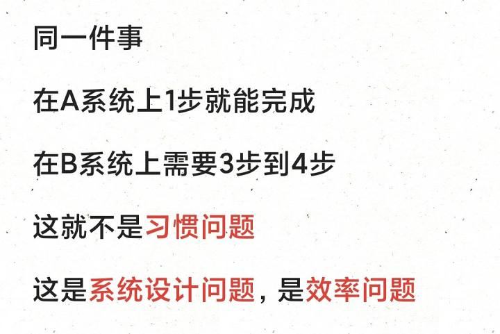
观前提示
1.短信分类/电话标记
类原生的短信是堆在一起的，不会自动分类成普通短信，通知短信和广告短信。
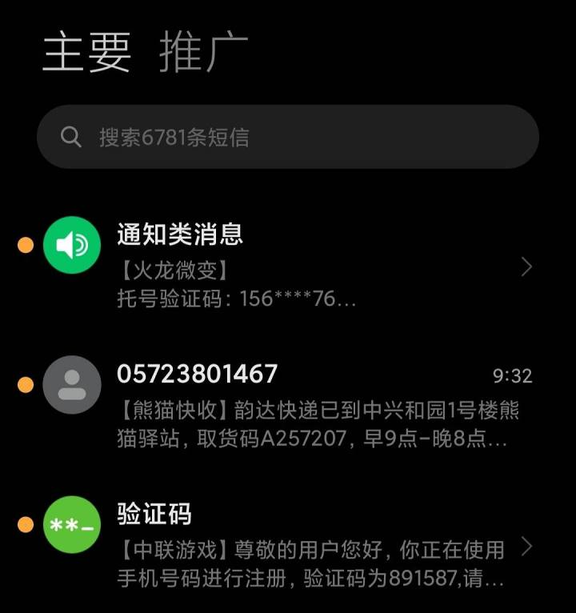
MIUI的短信自动分类
类似的基于云通讯录功能还有电话自动标记类别。这使得我在一些陌生电话前总会犹豫接不接。智能体验下降⭐⭐⭐。
(解决方法：安装手机管家能在一定程度上解决这个问题。但它太吃资源了，以一己之力把系统的流畅度拉低很多档次。所以我选择不装)
2.T9拨号
类原生的电话盘不支持T9，也就是在拨号盘直接输入拼音就会找到联系人。你不得不在联系人APP里手动寻找。智能体验下降⭐⭐。
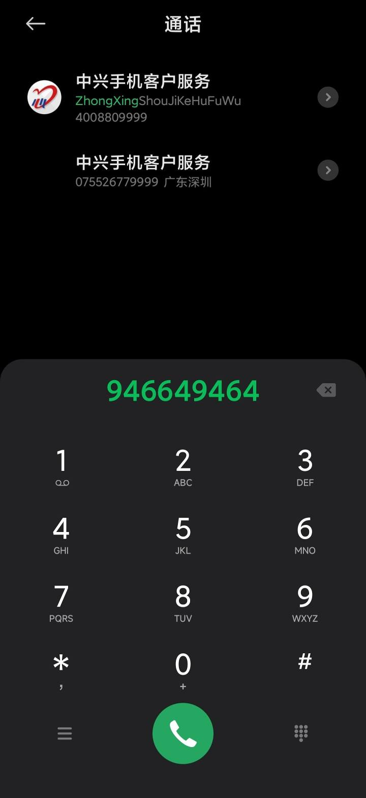
T9拨号键盘
(解决方法：安装第三方拨号软件)
3.小窗模式
不能更新游戏时随手从下往上一拖，挂一个小窗，然后主屏幕干别的了。
不能全屏打游戏或看视频时，来了一个通知，下拉出小窗直接回复了。
不能在全屏打游戏时通过侧边栏直接拉出微信，支付宝小窗扫码付款或者健康宝了。
左上角一拉，小窗就出来了
智能体验下降⭐⭐⭐⭐⭐。
(解决方法：用支持通知回复的女娲石(WX)和通知增强(QQ)。女娲石和通知增强因为是接管的通知，所以稳定性会好一些。
通知增强后的WX
另一个方案是用米窗+Shizuku，但不Root的情况下太不稳定了，Shizuku被杀后台之类的问题，切换Wifi后失效的问题，重启后失效的问题。一天之内米窗失效了N次)
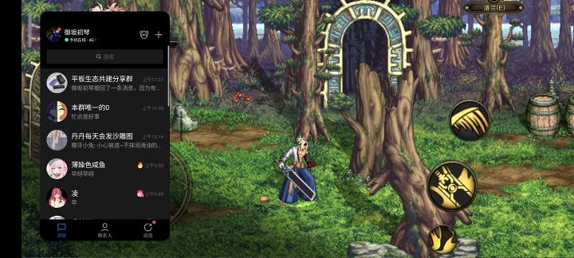
能实现类似的效果，但是容易失效
4.大爆炸
不能直接在任意位置双指长按，弹出识屏内容了！现在想要提取图片或者屏幕中的文字麻烦到吐血！智能体验下降⭐⭐⭐⭐。
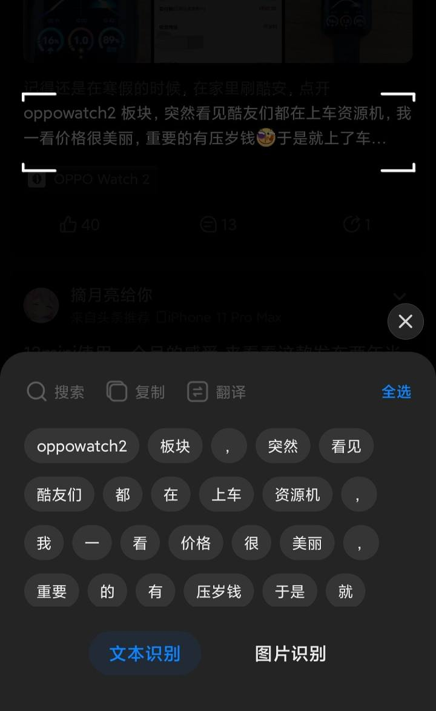
老罗的裤衩
(解决方法：用搜索进化APP，不ROOT下体验也很一般，操作步骤多，而且容易掉后台)
5.自动任务
不能回家自动连接WIFI了！然而这个绝对是最能提升智能机体验的功能！智能体验下降⭐⭐⭐⭐⭐。
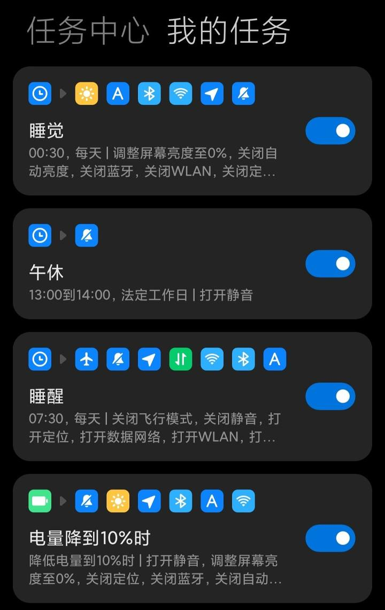
一小部分自动任务
(解决办法：暂无。没有ROOT权限，这个任务很难实现，一般APP没有那么高的权限，要不能操作的东西屈指可数，要不容易掉后台)
6.权限与隐私
不能设置应用不允许访问相册和社交软件文件了！也不能用空白通讯录骗APP自己的通讯录是空的了！安全体验下降⭐⭐⭐⭐⭐。
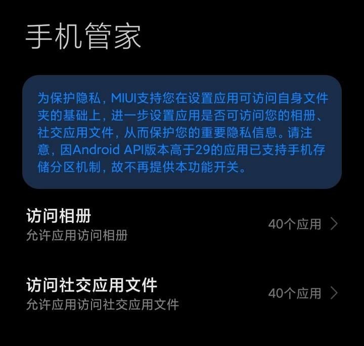
阻止应用访问相册和社交应用文件
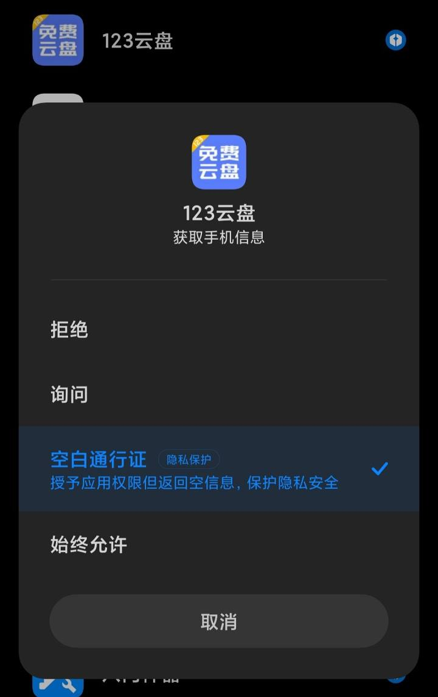
欺骗应用没有通讯录
再次强调，阻止权限和空白通行证是两回事。
(解决方法：暂无)
7.NFC
不ROOT没法模拟NFC…这对于我这种时常用手机刷卡的人简直无解。智能体验下降⭐⭐⭐⭐。
(解决方法：不解锁ROOT的情况下暂无)
8.共享与同步
不能与小米平板5Pro共享剪贴板，相册，便签等诸多内容了！照片得手动传，剪贴板也得手动发过去！这个对于生态用户简直是毁灭性打击！智能体验下降⭐⭐⭐⭐。
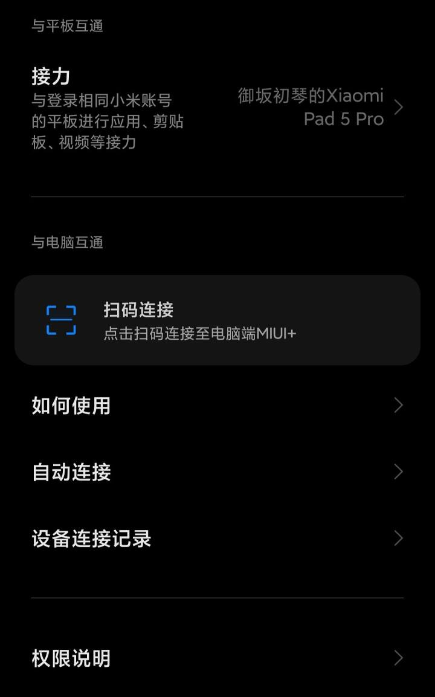
万年测试版的MIUI+
(解决方法：用时光相册和有道云笔记勉强对付一下)
13.负一屏
不能在负一屏直接唤醒微信扫码或者支付宝扫码和付款码了！但是可以通过在桌面创建快捷方式解决。智能体验下降⭐⭐。
(解决办法：还是用搜索进化APP，也可以用第三方启动器)
14.互传联盟
不能方便的给同事发文件了。智能体验下降⭐⭐。
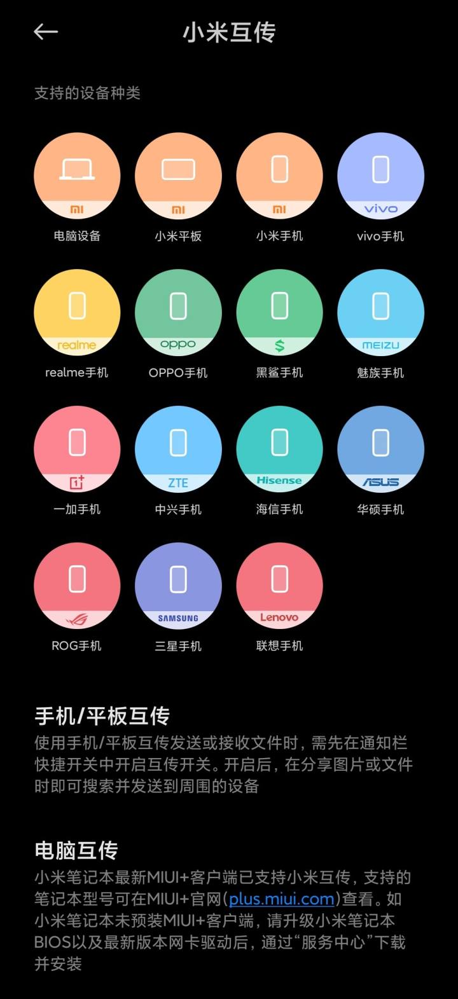
互传联盟支持的品牌
(解决方法：用QQ的发送给附近的人的功能)
9.截屏
没有三指长按区域截屏了，只能先截屏然后截取范围。
长截屏功能是残废的，几乎没有几个软件能正常支持。智能体验下降⭐。
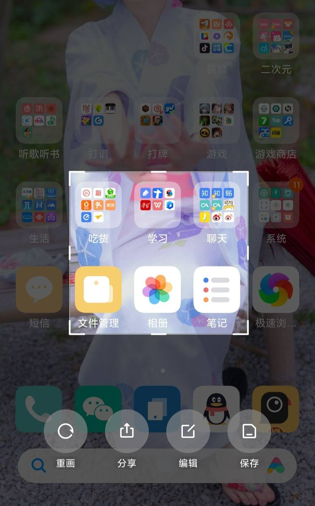
三指区域截屏
(解决方法：暂无)
10.系统级应用双开
不能直接系统双开了。智能体验下降⭐。
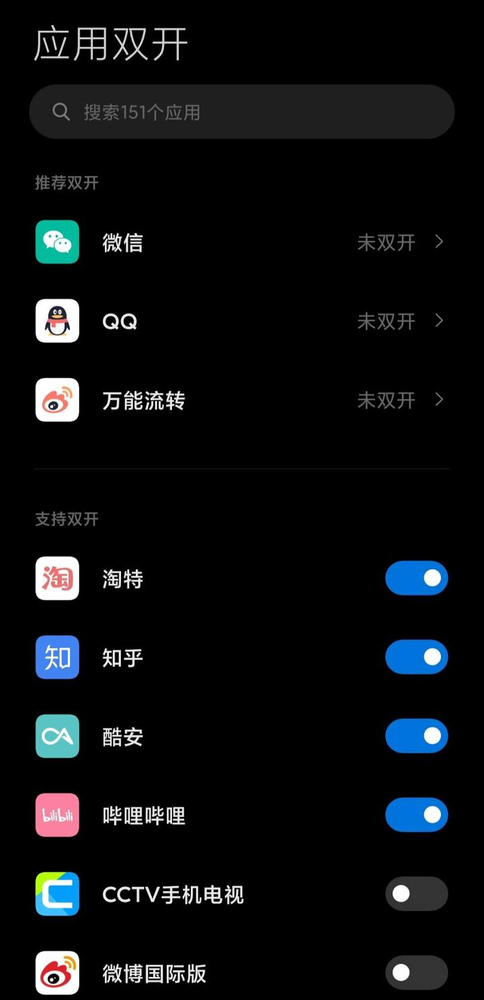
MIUI的系统应用双开
(解决方法：用分身有术)
11.后台识别BGM
不能直接在看视频时识别BGM了。智能体验下降⭐。
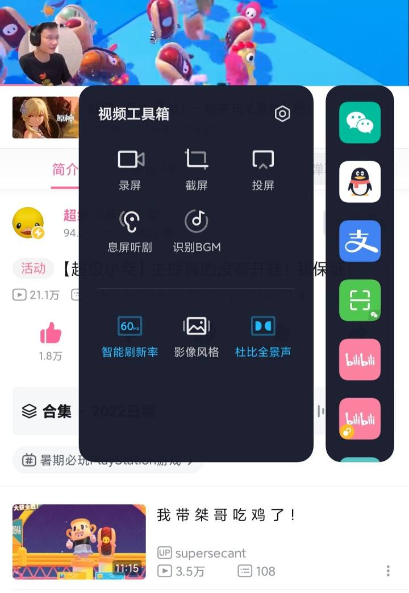
突然觉得这玩意似乎很有用
(解决方法：暂无)
12.视频自动翻译字幕
不能在看英文视频时自动实时翻译生成字幕了！智能体验下降⭐。
(解决方法：暂无)
13.只能使用抽屉式桌面
对于我这种190多个应用的用户简直是灾难。
找了一晚上，一共找到两个没有抽屉的桌面，都不好用。智能体验下降⭐。
(解决方法：忍着，或者使用iLauncher)
14.后台管理
不能手动锁后台了，有时候有些大应用会随机杀掉。即使开了后台无限制，每天仍然能看若干次某软件的小地球。智能体验下降等级⭐。
(解决方法：不ROOT，不ADB实现不了)
15.剪贴板列表
不能通过右下角查看剪贴板和常用语了。对我这种经常在手机上码字的人影响异常大。智能体验下降等级⭐。
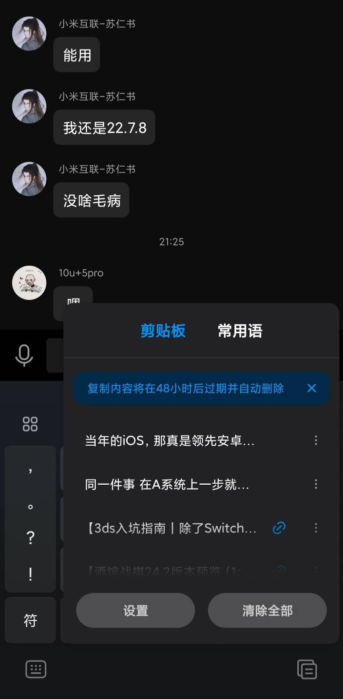
小米的历史剪贴板和常用语
(解决方法：搜狗输入法自带，只是位置不一样)
————————————————————
❤️ArrowOS优势篇
1.流畅度
流畅度大提升！相比MIUI，掉帧场景下降30％。可以最低和最高帧率都设置成144，相当于开启了全局高刷，简直完美！
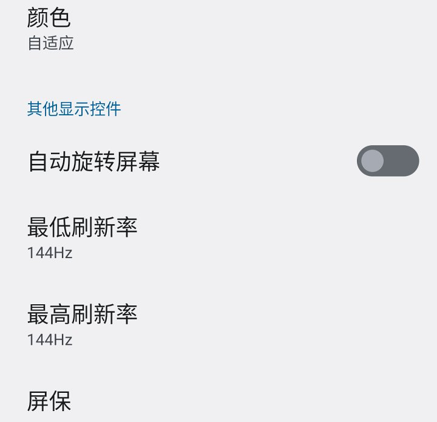
就这么设置就行了
流畅体验上升⭐⭐⭐。
(MIUI可以通过冻结部分应用开启全局高刷)
2.无广告
整个系统是没有任何广告的！同时，因为我用的无GMS版，连各种APP的推送广告也没了。
系统体验上升⭐⭐。
(MIUI可以找一份关广告教程自己关一下)
3.系统维护期
K30S将会在今年10月份迎来最后的MIUI开发版更新，明年迎来最后的MIUI正式版更新。但是ArrowOS还会一直更下去。
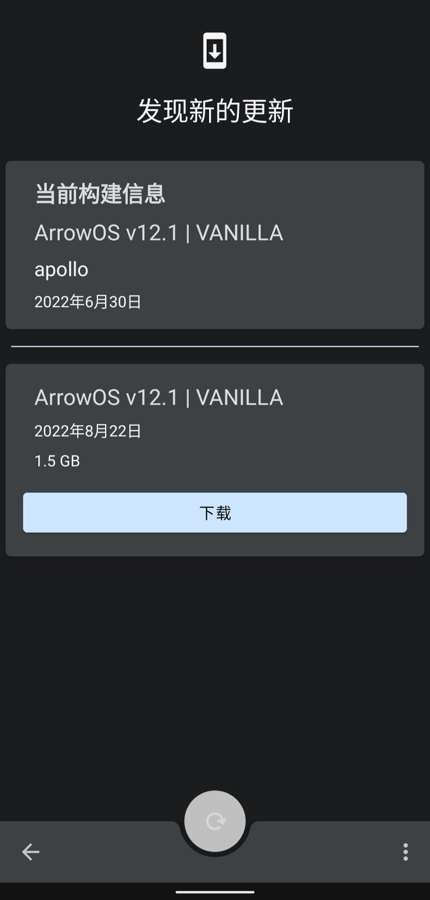
ArrowOS的系统升级
而且，ArrowOS支持OTA升级，无需线刷卡刷，升级体验非常好，虽然并不会升级什么功能。
维护体验上升⭐。
(MIUI可以等民间适配MIUI14，反正小米平板4都吃到MIUI13 For Pad，没有什么不可能)
4.分享
类原生的分类界面是按应用区分的，非常方便。智能体验上升⭐⭐。
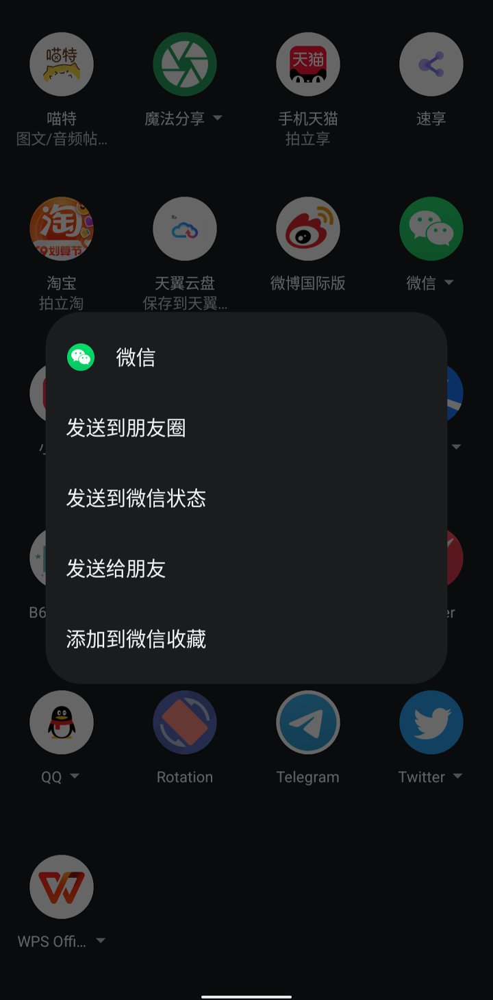
分享界面
(MIUI赶紧抄过来！)
5.手表软件连通性
不知道为什么，之前在MIUI上Haylou Fun总会有消息延迟，很长一段时间不推送，但是突然推送一大堆消息过来。在ArrowOS上没有这个问题。穿戴体验提升⭐⭐⭐。
6.容量(特有)
从128G换回256G，这种软件和学习资料随便装的感觉是在太爽了！以后再买128G手机我就是狗🐶！
手机体验上升⭐⭐⭐⭐⭐。
————————————————————
❤️总结。
通过上边两章对比，我们不难发现，类原生很像一个有了双侧返回的iOS，流畅，纯净，但是实用功能实在太少。优点缺点都类似。对于直接上手用的人来说几乎没有区别。这也是我一直以来的一个暴论，越能习惯类原生的人，对手机自带功能都找不到的人，就越容易换到iOS并且满足。
不同的是，即使不ROOT，类原生也可以通过装修的方式完成一些功能上的补全，比如米窗等。但是iOS不可以。
尽管如此，这篇文章里提到的几乎所有内容都是国内大部分定制版安卓自带的。使用者根本不需要任何装修，顶多只需要一个开关就可以直接使用，可它们实实在在的提升了一般用户的日常体验，这才是大家常说的“本土化”。
更别说某些自己装修完的功能远比不上定制版系统自带的功能。依旧以米窗为例，MIUI的小窗里的各种软件能直接扫码，但是米窗就不行，当你点击扫码时就全屏了。
相比之下，我更希望我的设备足够智能，因为智能带来的快捷和所节约的时间往往远大于单纯的流畅给你节约的时间和体验。当然，又智能又流畅，就更好了。
不要把什么都归结为习惯，那只是给妥协找的理由
最后，这篇文章的内容我会做成视频，发布在B站上，通过视频方式给大家一个更直观的对比。
类原生也许在一些人的眼中很好，但是对我来说，它带来的优点远不及它本身功能的缺失导致的不方便，就像如今iOS给我的感觉一样。我也将会在过段时间去尝试更多的国产定制系统比如Flyme，ColorOS等等，也可能再刷回MIUI养老。毕竟：
愿你刷机半生，归来仍是____。
再补一段题外话：
装修类原生花了我整整一天时间，勉强到了能用的程度。
这玩意很容易让人觉得“用安卓真**折腾”。
然而，事实真的如此吗？
当我想折腾一台小米到相同的功能和类似的性能，只需一键关广告加接电脑冻结几个应用开个全局高刷，一共15分钟以内就能搞定。估计像ColorOS或其他定制版系统，需要的时间更短。各种取舍，请您细品。